新手手册

刚进入游戏时，是不是非常激动，想马上出去行侠仗义，惩恶扬善，别着急，在正式进入游戏之前，先听听新手引导员纳兰真对各个页面的讲解，初步了解游戏。
内政建设
正式进入游戏后，您会拥有一座有固定坐标的村镇，村镇初始拥有聚义厅1级“
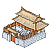
”，铜钱2008“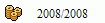
”，粮食2008“”，人口208“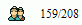
”。在游戏过程中，游戏窗口右下角的新手引导员纳兰真“”会一直陪伴您，提示您下一步的发展方向
点击内政页面“”按钮后进入内政页面，选中带有旗子的空地“”，在页面右侧会看到该空地可建造的建筑、该建筑的详细信息及该建筑的相关操作，请仔细阅读这些信息。将鼠标悬停在建筑的 “”按钮上时，会显示建造该建筑所需的资源信息，只要满足需求，点击“”按钮就可以建造该建筑。
在游戏初期建议优先建造资源类建筑钱庄“”、农场“”、义舍“
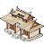
”，资源不论您是否在线都会产出，当然，别忘了建造资源仓库类建筑帐房“”、粮仓“侠客功能
招募侠客需要门派建筑，建造门派需要先将聚义厅升级到2级，当您有足够的资源储备时，可以建造自己喜欢的门派建筑（天王号令台“
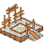
”、少林大雄宝殿“建造门派建筑之后，选中门派建筑在右侧操作栏中点击“”按钮，等待一段时间后在寻访侠客的门派建筑中选中侠客头像“”，点击“”按钮即可雇用该侠客，村镇内最多可容纳10位侠客，雇佣的侠客可以帮您保护村镇，抵御外敌，对外攻打山寨，掠夺敌对方资源。
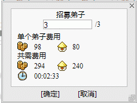
刚雇用的侠客需要招募训练弟子才能形成战斗力，点击侠客页面“”按钮进入侠客页面，里选择刚雇用的侠客，点击“”按钮后，输入招募数量“
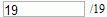
”点击“”按钮即可招募弟子。训练弟子可以在侠客页面选中侠客后，在右侧操作栏中点击“”按钮即可训练弟子，每次训练后会提升弟子训练度，科技“犒劳三军”影响弟子训练效果，科技“枕戈待旦”影响弟子训练时间，弟子训练度最高100%。
战斗功能
通过出征战斗可以掠夺资源、物品，参加战斗的侠客能获得经验奖励提升等级。
出征之前先将参战侠客加入出战队列“”，在侠客页面选择侠客，点击“”按钮后侠客加入出战队列，选择出战队列中的侠客，点击“”按钮时，侠客转为后备状态“”。
点击大地图页面“”按钮进入大地图页面，在地图中选择山寨“”（初期建议选择1-5级山寨），点击“”按钮后，设为出战队列的侠客将会攻击此山寨，战斗结束时消息页面图标会由“”变为“ ”，表示您有了新消息，点击此按钮进入消息页面，查看战报时在消息页面里点击消息标题“”，在弹出的战报页面中会详细说明交战双方实力、侠客信息及战斗的胜负。
战场上刀剑无眼，侠客在战斗中可能会受重伤“”，不过您放心，重伤的侠客会随时间流逝而自动恢复。
物品功能
侠客装备是影响战斗结果的一个重要因素，武器影响侠客攻击属性及技能施展，防具影响侠客防御力，首饰影响侠客抗性；在侠客页面中点击侠客装备空位“”“”“”，会出现一个弹出窗口，点击物品图标“”后物品会装备到侠客身上“”“”“”。
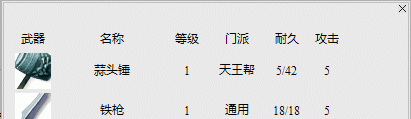
市场功能
如果您有多余的物品或急需某件物品时，出售物品通过点击市场页面“
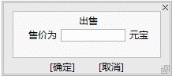
需要出售物品时在物品页面里选择物品名称“”，点击“”按钮后在弹出窗口中输入价格“
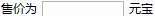
”，并点击“”按钮即可挂在市场上出售，有人购买后，系统会发送一封买卖信息信件给您。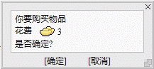
需要购买物品时在市场页面选择物品类型“”，在该类型页面内选择物品名称“”，并在右侧操作栏里点击“”按钮，在弹出窗口中确认后，出售者将收到您被扣除的元宝，物品将会出现在您的物品页面里。
任务功能
任务是剑侠情缘web中获得资源与物品的一个重要途径，任务共分为“”三种，查看任务需要点击任务页面“
日常任务需要玩家手动收集任务，点击“”按钮等待一段时间后可以获取任务信息，达到“”时，会有任务“”提示，点击“”按钮即可领取任务奖励，如果您觉得任务太难也可以点击“”按钮放弃任务。
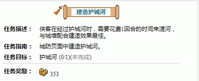
城防功能
城防是村镇稳定发展的重要保障，其主要分为两部分：城防建筑与侠客布防。
建造城防建筑需要工匠坊“
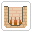
”）点击“”按钮建造，要建造更高级的城防建筑需要提升工匠坊内与城防建筑对应的城防科技（护城河、树林无城防科技）。布防侠客只能布防状态为待命“”的侠客，在城防页面里选择格子，选中侠客点击“”按钮后，侠客将出现在城防地图上协同城防建筑防守，布防的侠客转为驻防状态“”。
科技功能
在完成内政发展、侠客操作、城防建设后，接下来要做的是发展村镇科技，在内政页面中建造科技建筑营造司“
在了解掌握了以上游戏技巧后，您的村镇就颇具规模了，加以时日，您必定会成为剑侠情缘web中独霸一方的江湖豪杰！
1、问：剑侠中有几种资源？
答：剑侠中共有3种资源：金钱、粮食、人口。
2、问：游戏初期，应该怎样发展？
答：游戏初期，优先升级资源类建筑与资源仓库类建筑。
3、问：为什么有些按钮是灰色的，无法操作？
答：将鼠标悬停在按钮上时，文字内容有用红色标识的部分是无法操作的原因。
4、问：游戏里有新手保护期么？
答：游戏对新手提供了三天的新手保护期，在这段时间内，其他玩家不能攻击您的村镇。
5、问：为什么资源建筑显示的产量与实际产量不符？
答：侠客带领的弟子需要维护费用，会消耗部分资源产量，所以会造成资源建筑显示产量与实际产量不符的情况。
6、问：怎样才能拥有自己的侠客？
答：通过建造升级门派建筑，寻访并雇佣侠客来组建自己的侠客队伍。
7、问：建筑最高可以升到几级？
答：技类建筑、门派类建筑满级20级，其它建筑满级30级。
8、问：升级聚义厅有什么好处？
答：聚义厅是建造资源建筑、军事建筑、科技建筑的前提条件，升级聚义厅还可以缩短建造升级建筑的时间，扩大村镇的规模。
1.在内政页面中建造资源建筑：1级农场、1级钱庄、1级义舍与资源仓库：1级粮仓、1级帐房、1级民居，并至少升级到5级。
2.在内政页面中升级聚义厅到2级。
3.在内政页面中建造1级门派建筑。
4.在内政页面的门派建筑中寻访并雇用侠客。
5.在侠客页面中让侠客招募并训练弟子，攻打低级山寨。
6.在内政页面继续升级资源建筑，积累资源。
7.在内政页面建造1级工匠坊后，在城防页面建造城防建筑。
8.在内政页面中建造科技建筑：1级营造司、1级演武场，并升级建筑内的科技。
9.在内政页面中建造其它门派建筑，招募更多侠客，创造多样化的战术。
10.在帮派页面中加入帮派，与朋友并肩作战。